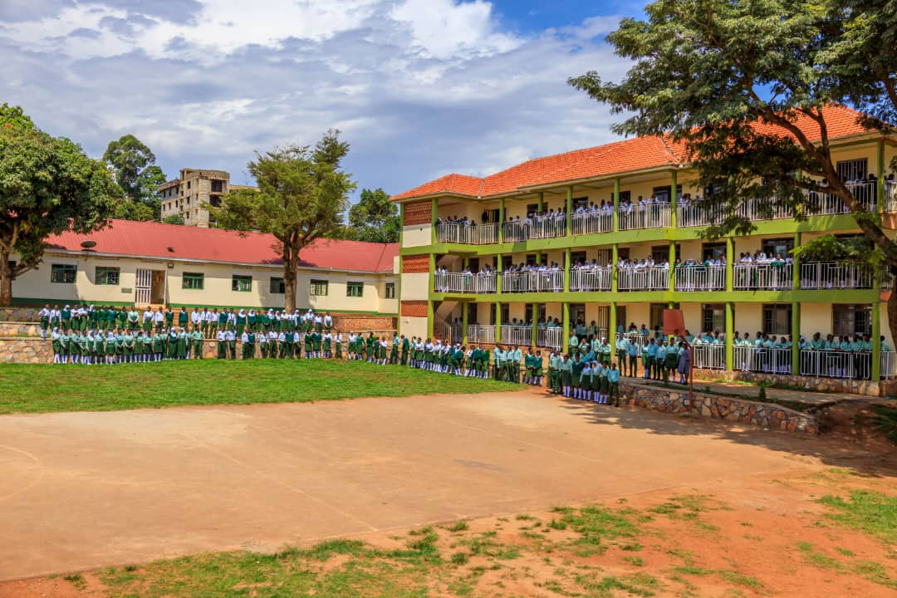

Our vision
Embracing every learner's uniqueness to ensure self-discovery to guide them to be the leaders that transform society.

Universal High School Kisaasi was founded in [year] by [founder's name] with one aim: to give every learner in Kisaasi and beyond a quality secondary education.
[One or two sentences on how the school has grown since then, for example new classrooms, laboratories or the opening of A-level.]
Today we are a day and boarding school offering O-level and A-level education, guided by a learner-centred approach that helps every student discover who they are.
Life at Universal High is about more than lessons. Every week has time for sport, faith, responsibility and fun.
Sports every weekday from 4:40 pm, and a compulsory Saturday morning jog to start the weekend.
[Names of the school's clubs and societies, for example debate, science or music.]
Prefects help lead the school, and every student is trusted to grow into a leader who transforms society.
Services for Christian students on Thursdays and Sundays, and Friday prayers for Muslim students.
Students care for their classrooms, dormitories and compound, and take part in projects like the school gardens.
Saturday and Sunday evenings are set aside for entertainment and time with friends.
The boarding timetable. Day scholars join for lessons, sports and lunch.
Embracing every learner's uniqueness to ensure self-discovery to guide them to be the leaders that transform society.
Providing the best education through fostering a school environment that is learner centered, ensures self-discovery and embraces the learner's uniqueness.
We are fully committed to providing you with the best education through consistently fostering a school environment that is learner centered, ensures self-discovery, and embraces each learner's uniqueness to guide you to being the best leader that can transform society.
Faith and respect guide how we live and learn.
We are honest and do what is right, even when no one is watching.
Effort every day is how goals are reached.
We encourage new ideas and fresh ways of solving problems.
We aim for our best in class, in sport and in character.
We keep our eyes on our goals and finish what we start.